MANTA
Marine Autonomous Neutralization & Tracking ArrayAn ocean restoration platform that transforms whale migration into a living network for monitoring and localized intervention against ocean acidification.
Oceans are becoming increasingly acidic.
Every year, the ocean absorbs nearly one-third of human-generated carbon dioxide. This changes seawater chemistry, reducing pH and making it increasingly difficult for marine ecosystems to survive.
As acidification spreads, corals weaken, shell-forming organisms struggle to build protective shells, and entire marine food webs become increasingly vulnerable.
The ocean already has its guardians. We simply help them protect it.
MANTA detects local chemical stress and delivers precise, minimal interventions only where needed. Data is recorded, transmitted and analysed to continuously improve decisions and outcomes.
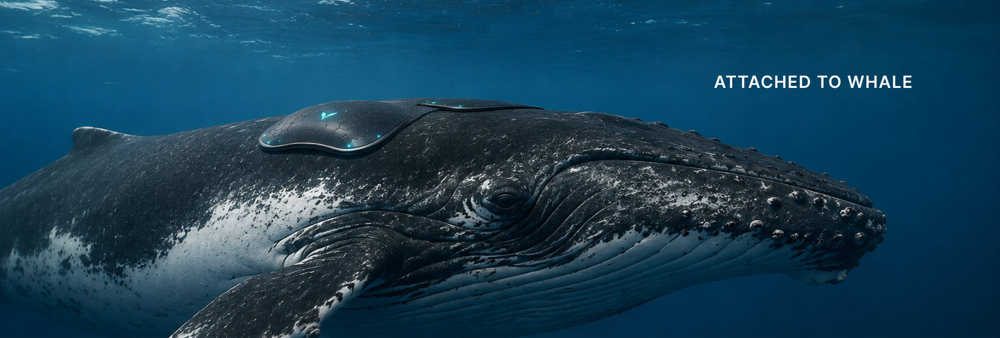
Attached to whale: the device sits on the whale's back like a second skin.
Nature's own ocean-crossing network.
Whales naturally travel over 4,000–6,500 miles every year, crossing some of the least monitored regions of the world's oceans. Their predictable migration transforms them into ideal mobile platforms for environmental sensing.
Instead of introducing new infrastructure, MANTA works with an existing natural system.
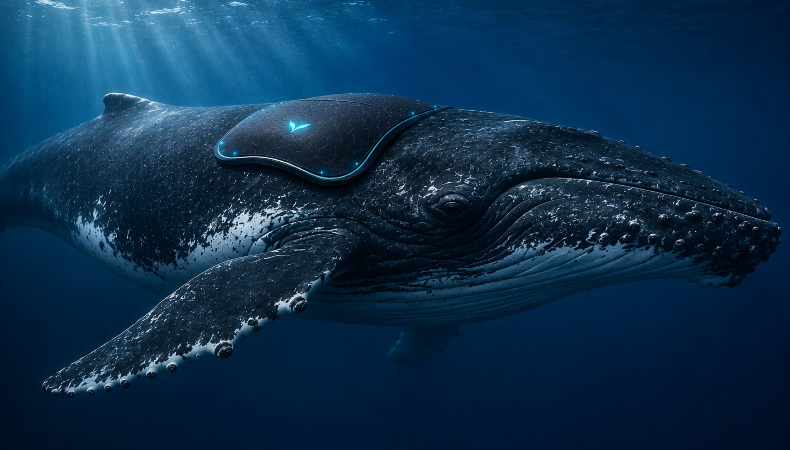
Sense. Decide. Act. Learn.
-
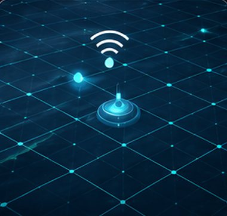
1Sense
Sensors continuously measure pH, temperature, CO₂, salinity and more.
-
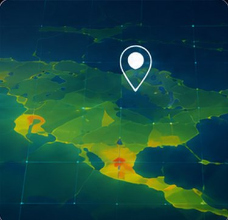
2Analyze
AI onboard analyses data in real time to identify stress zones.
-
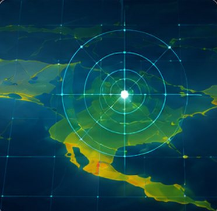
3Decide
The system predicts impact and decides the exact intervention needed.
-
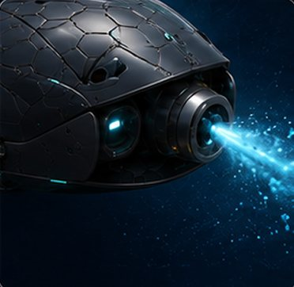
4Neutralize
A micro-dose of neutralizing compound is released only where needed.
-
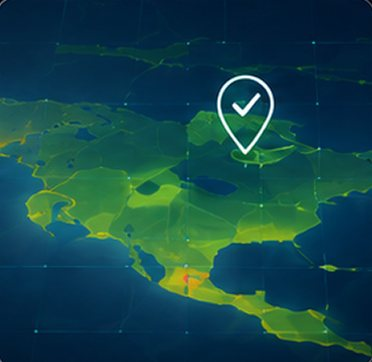
5Verify
Post-intervention data confirms improvement in local water quality.
-
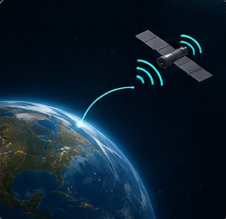
6Transmit
Data and outcomes are sent via satellite for global analysis.
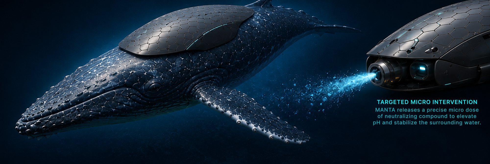
MANTA releases a precise micro-dose of neutralizing compound to elevate pH and stabilize the surrounding water, acting only where chemical stress is detected.
Seven layers, one second skin.
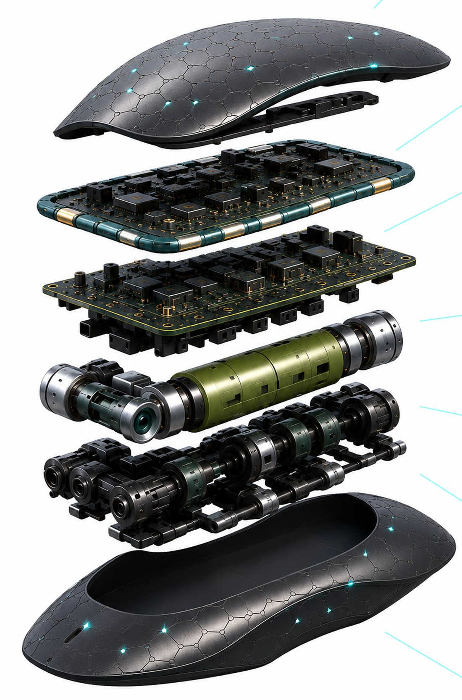
Smart Skin
Flexible, solar-integrated outer layer; hydrodynamic and bio-inspired to move seamlessly with the whale.
Communication Suite
Satellite uplink for real-time data transmission: low power, long range, connectivity anywhere in the ocean.
AI & Control Core
Onboard AI for adaptive decision making, target selection and efficient power management.
Sensor Suite
Multi-parameter sensors monitor water quality, pH, temperature, salinity, turbidity and dissolved oxygen.
Neutralization Module
Micro-dose chemical cartridge that stores neutralizing compound for targeted interventions.
Micro Pump Array
Precision micro pumps deliver exact doses with uniform dispersion and minimal waste.
Hydrodynamic Base
Smooth bio-inspired base for seamless attachment and natural movement with the whale.
Form follows the whale.
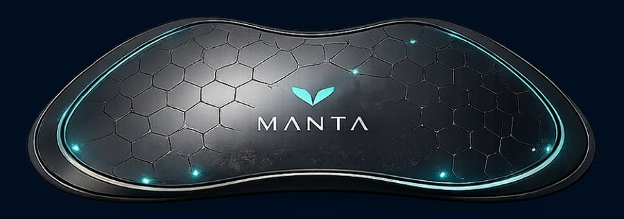
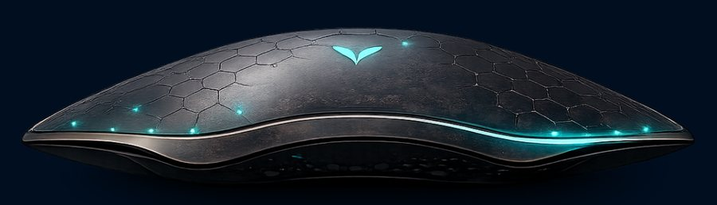
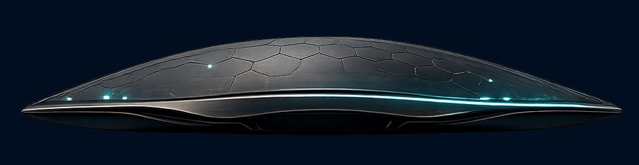
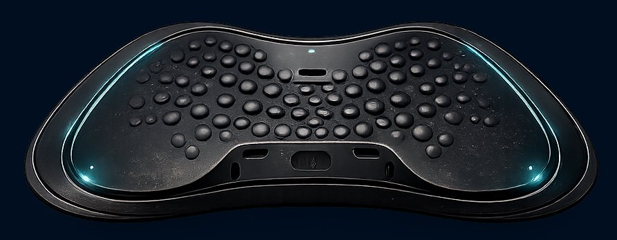
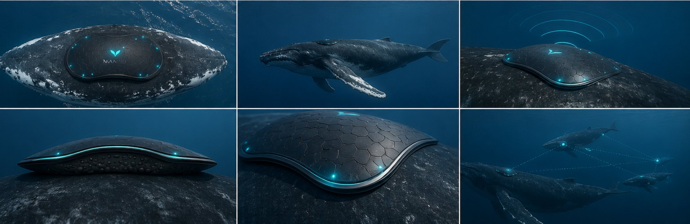
Drawn from the whale's tail.
The MANTA mark abstracts a whale's fluke into a single, fluid cyan form.
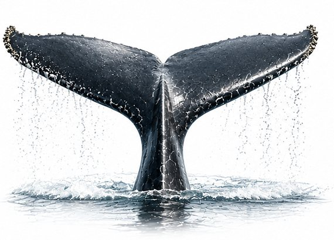
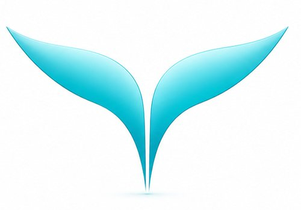
The full boards.
Click to view at full size.
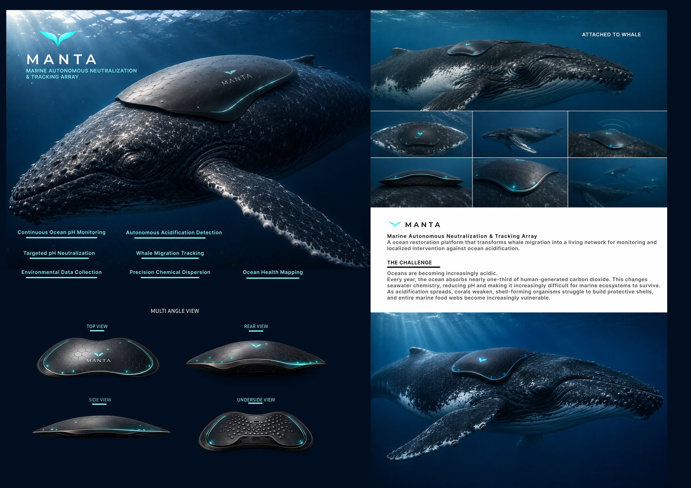
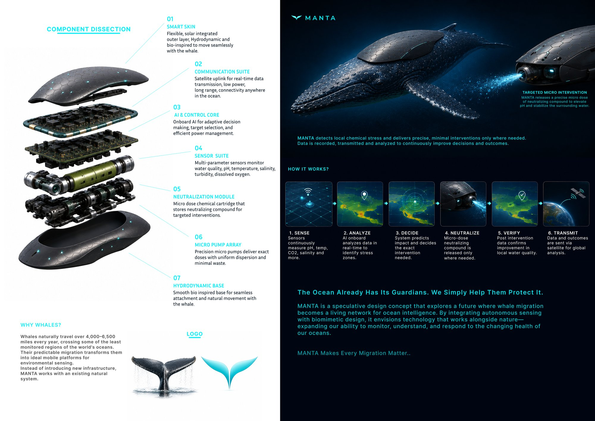
The Ocean Already Has Its Guardians. We Simply Help Them Protect It.
MANTA is a speculative design concept that explores a future where whale migration becomes a living network for ocean intelligence. By integrating autonomous sensing with biomimetic design, it envisions technology that works alongside nature, expanding our ability to monitor, understand, and respond to the changing health of our oceans.
MANTA Makes Every Migration Matter.